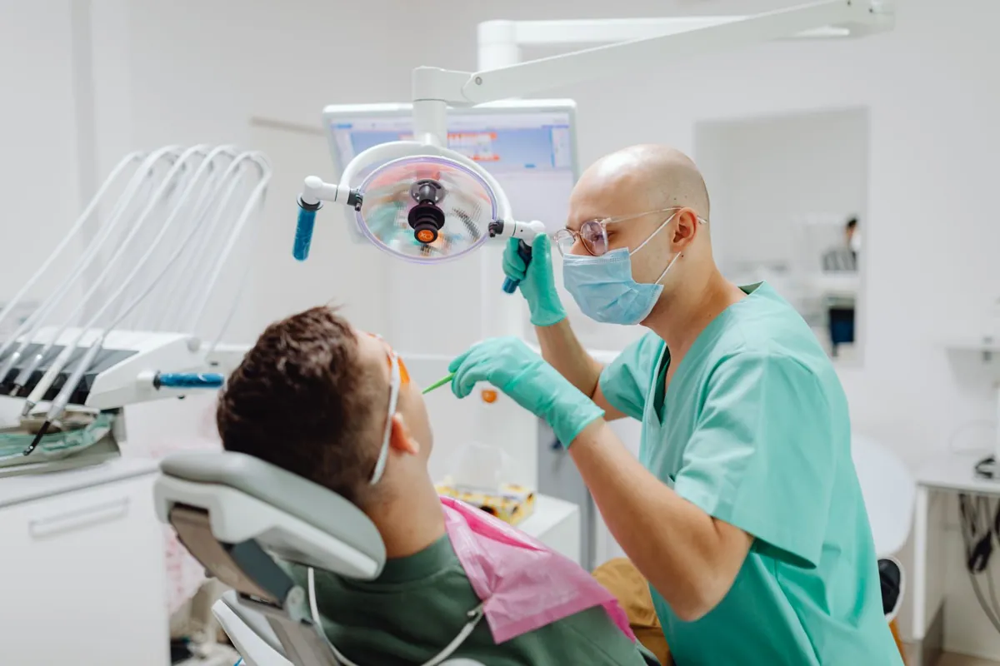

Avaliação
A primeira consulta: conversa, exame da boca inteira e radiografia quando indicada. Você sai sabendo o que precisa, o que é urgente e o que pode esperar.
Coberta pelos convênios da lista
InícioTratamentos
Da prevenção à prótese, organizados por necessidade. Em cada um você vê o que é, quando é indicado e como fica com o convênio.
Agendar avaliação
01
Prevenir
A primeira consulta: conversa, exame da boca inteira e radiografia quando indicada. Você sai sabendo o que precisa, o que é urgente e o que pode esperar.
Coberta pelos convênios da lista
Remoção do tártaro, polimento, flúor quando indicado e orientação de escovação. O ideal é a cada 6 meses.
Coberta pelos convênios da lista
02
Tratar
Remove a cárie e reconstrói o dente com resina na cor dele. Também serve para dentes lascados e restaurações antigas que soltaram. Geralmente em uma sessão, com anestesia local.
Coberta pela maioria dos planos
Quando a cárie ou uma pancada chegam ao nervo, o canal limpa o interior do dente para tentar mantê-lo na boca, em vez de extrair.
Cobertura conforme o plano, com autorização prévia
Indicada quando o dente não pode ser mantido ou no caso do siso que incomoda. Explicamos antes os cuidados de casa e o que fazer depois para repor o espaço, se for preciso.
Coberta pela maioria dos planos
03
Repor dentes
Coroa para o dente muito destruído, ponte fixa para preencher um espaço, prótese parcial removível ou dentadura completa. Feitas com laboratório parceiro, com provas antes da peça final.
Cobertura conforme o plano; alguns cobrem só a dentadura
Um pino no osso que recebe uma coroa por cima, para quem perdeu dentes e quer algo fixo. Depende de avaliação do osso e da saúde geral.
Em geral não coberto; reembolso conforme o plano
04
Alinhar
O aparelho de braquetes, com manutenção mensal. Para crianças a partir da troca dos dentes, jovens e adultos.
Cobertura conforme o plano
Aparelhos que orientam o crescimento dos ossos da face na infância, quando a avaliação indica. Feita pela ortodontista habilitada (dado de exemplo).
Cobertura conforme o plano
05
Crianças
Primeira consulta, flúor, selante, restaurações nos dentes de leite e acompanhamento da troca dos dentes, com consultas mais longas e a família por perto.
Coberta pelos convênios da lista

06
Estética
Caseiro com moldeira ou no consultório, depois de uma avaliação que confere se os dentes e a gengiva estão saudáveis. O resultado varia de pessoa para pessoa.
Em geral não coberto pelos planos
Pequenas correções de forma e de cor com resina, planejadas para continuar parecendo você.
Em geral não coberto pelos planos
Agende
Comece pela avaliação. Em uma consulta você entende o que tem, quais são as opções e o que o seu convênio cobre.